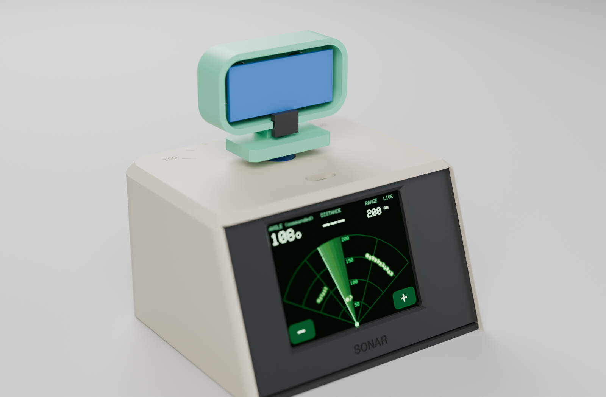
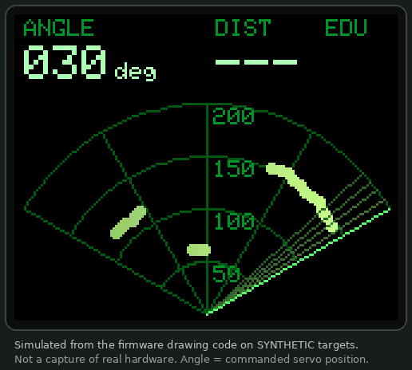
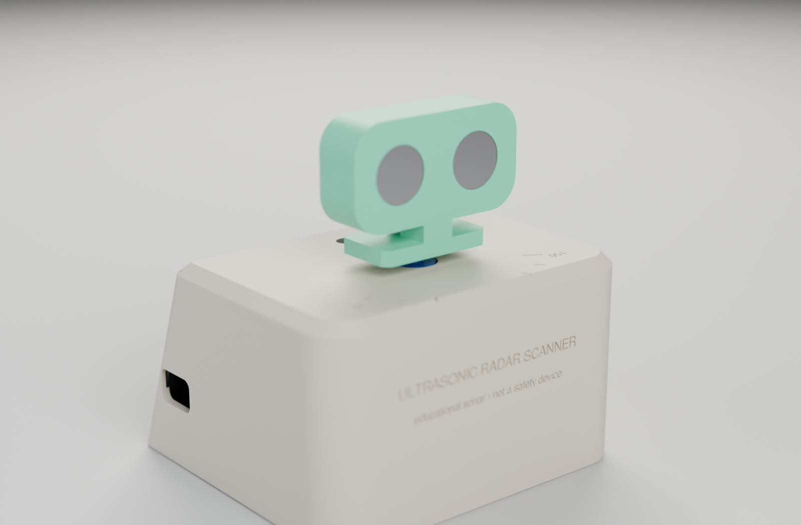
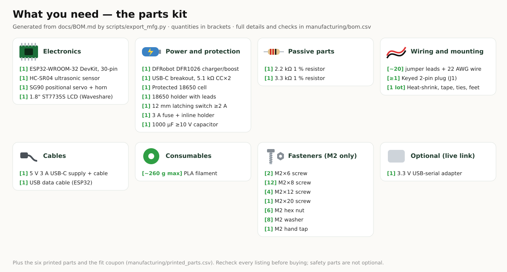
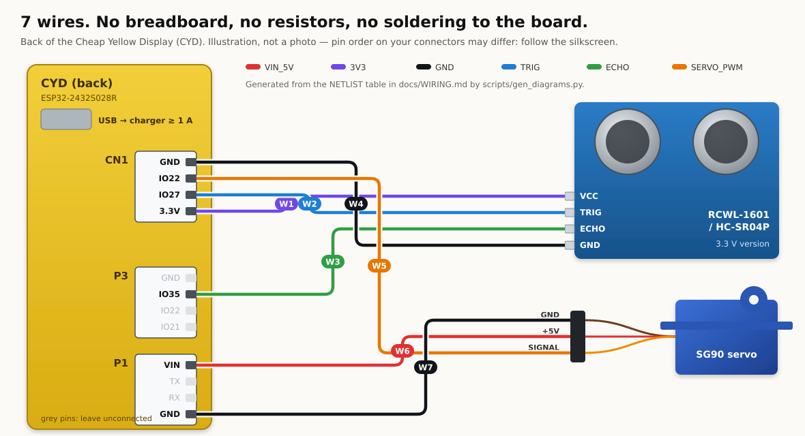
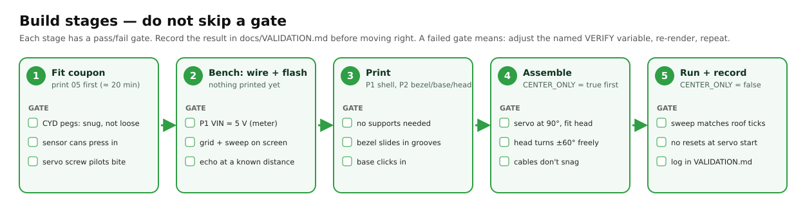
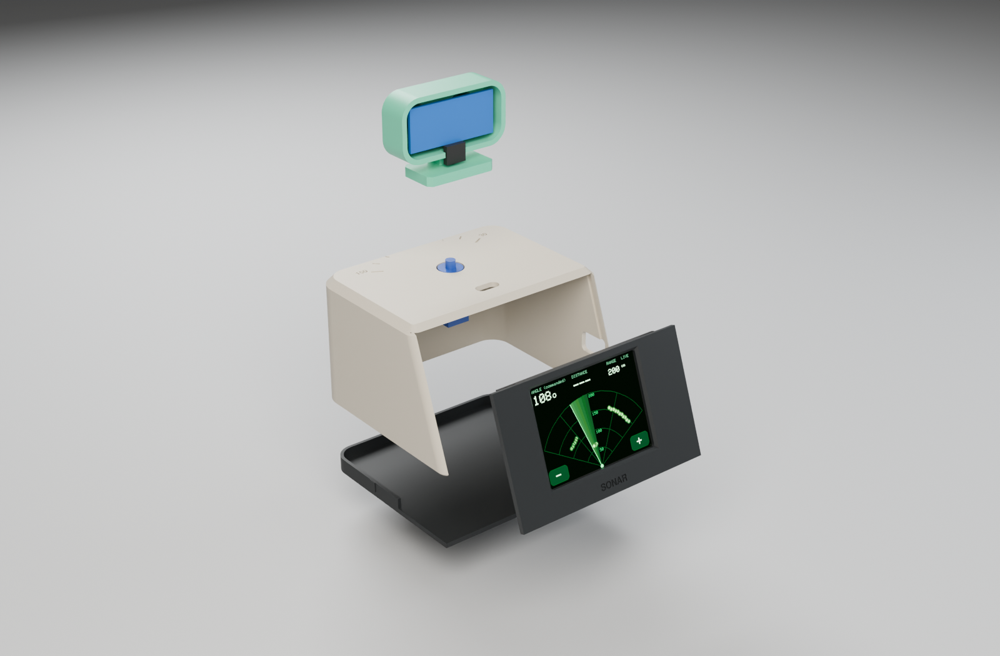
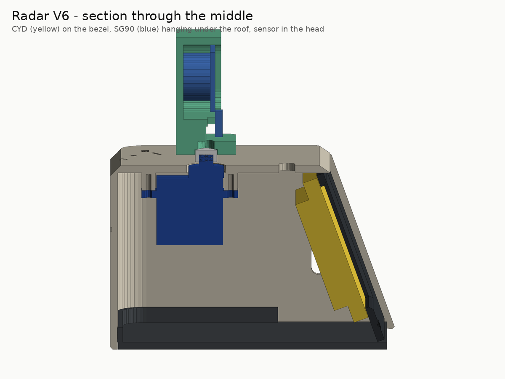

Ultrasonic Radar Scanner
A tiny desk console that sweeps an ultrasonic "two-eye" head on a servo and draws what it hears as a green radar-style picture on a 2.8" touch screen. Three modules, seven wires, four printed parts, one USB cable.


 |
  |
| Render of the CadQuery model (Blender Cycles) — not a photo. | The firmware's drawing code on synthetic targets; the scan side. |
Important. Educational sonar with a radar-style display. Not radio-frequency radar, and not a safety or obstacle-avoidance device. It sweeps about 120°, and the angle shown is the commanded servo position. The CAD, firmware and apps pass automated checks, but no V6 unit has been printed, wired or powered yet.
docs/VALIDATION.mdtracks what is proven.
The whole kit

| Part | Est. US$ | |
|---|---|---|
| 🖥️ | ESP32-2432S028R "Cheap Yellow Display" — ESP32, 2.8" 320 × 240 touch screen, RGB LED, USB | 12–20 |
| 🔊 | RCWL-1601 or HC-SR04P ultrasonic sensor (3.3 V version — no resistors needed) | 2–4 |
| ⚙️ | SG90 micro servo, positional, with horn and its 2 screws | 2–3 |
| 🔌 | 3 × JST 1.25 mm 4-pin → Dupont cables, 3 male-male pins | 1–3 |
| 🖨️ | 4 printed parts, ≈ 120 g PLA, no supports | — |
Plus a USB cable and a ≥ 1 A charger or power bank. About US$18–30 in total — rough single-unit
estimates, not quotes. Details and what to check before buying: docs/BOM.md.
Wire it — 7 wires

| Wire | From (CYD) | To |
|---|---|---|
| W1 | CN1 3.3V | sensor VCC |
| W2 | CN1 IO27 | sensor TRIG |
| W3 | P3 IO35 | sensor ECHO |
| W4 | CN1 GND | sensor GND |
| W5 | CN1 IO22 | servo signal (orange) |
| W6 | P1 VIN | servo + (red) — measure ≈ 5 V first |
| W7 | P1 GND | servo − (brown) |
Pin by pin, connector pinouts, power notes and the 5 V HC-SR04 fallback: docs/WIRING.md.
Build it

- Print the fit coupon —
cad/3mf/plate_S1_fit_coupon.3mf— and pick peg, hole and screw sizes (Printing). - Bench test: wire the 7 wires on the table and flash — Flash page in Chrome/Edge, or
arduino-cli compile --upload --profile esp32-core3 -p <port> firmware/Radar_V6. - Print
cad/3mf/radar_a1mini_multiplate.3mf— plate P1 (shell) and P2 (bezel, base, head). - Assemble in about 30 minutes (Assembly) — press fits and the servo's own two screws.
- Run and record the tests in the build packet.
 |
 |
| Shell · bezel (the CYD presses on) · base · head. | Section: CYD on the bezel, servo under the roof, sensor in the head. |
Everything you need to make one
| 🧊 3D files | cad/3mf plates · cad/stl · cad/step · source cad/build_radar.py (every dimension a named variable) |
| 🧾 Parts list | docs/BOM.md · manufacturing/bom.csv |
| 🔌 Circuit | docs/WIRING.md · wiring_pins.csv · wire_list.csv |
| 📄 Build packet | manufacturing/build_packet.pdf — print it, tick every step |
| ✅ Requirements | docs/REQUIREMENTS.md — 33, each traced to a check or test |
| 💾 Firmware | firmware/Radar_V6 — Arduino, pinned ESP32 core + libraries, compiles with 0 warnings |
| 🌐 Apps | web app (guide, simulator, live console, flasher) · desktop app on Releases |
| 📦 Manufacturing kit | one ZIP per release: build packet, CSVs, 3MF/STL/STEP, diagrams, firmware |
How it works
| Equation | With the defaults | |
|---|---|---|
| Distance | $d = v t / 2$, $v ≈ 331.3 + 0.606\,T$ | 5 823 µs at 20 °C → 100 cm |
| Servo | 50 Hz frame, 1.0–2.0 ms pulse, 16-bit duty | 90° → 1500 µs → 4915 |
| Sweep | $T = N_{moves}(t_{settle} + t_{overhead})$ | 40 × ~115 ms ≈ 4.6 s one way (estimate) |
Intuition, worked examples and plots: docs/EQUATIONS.md. Every number is re-checked by a test.
Use it
- On the device: tap − / + to change the range (50–400 cm), tap the radar to pause. The LED turns red under 30 cm.
- Live console: plug the scanner into a computer — the same USB cable carries the readings — and open the
live console or the desktop app. Record and replay sessions (
docs/LIVE_LINK.md).
Publish, rebuild, contribute
- Put it on GitHub from a fresh Ubuntu terminal: one paste —
docs/PUBLISH.md. - Regenerate everything:
python scripts/render_cad.py,render_previews.py,render_beauty.py(Blenderbpy),sim_display.py,gen_diagrams.py,export_mfg.py,make_build_packet.py,gen_traceability.py,build_site.py, thenpython -m pytest tests. - Built one? Fill in the build packet's test sheet and send the results as a pull request to
docs/VALIDATION.md.
Repository layout
cad/build_radar.py CadQuery source (model of record)
cad/3mf cad/stl cad/step generated print files and editable CAD (never edit by hand)
firmware/Radar_V6/ Radar_V6.ino + sketch.yaml (pinned ESP32 core and libraries)
manufacturing/ bom.csv, printed_parts.csv, wiring_pins.csv, wire_list.csv, build_packet.pdf
docs/ REQUIREMENTS, BOM, WIRING, PRINTING, ASSEMBLY, EQUATIONS, LIVE_LINK,
VALIDATION, SECURITY, PUBLISH, GLOSSARY
hardware/diagrams/ renders, wiring picture, parts kit, plates, GIF (all generated)
site/ web app (GitHub Pages): landing, live console, flasher, guide
app/ desktop app (Electron)
scripts/ every generator, packager and exporter
tests/ pytest, Node and browser checks
sbom/ CycloneDX toolchain bill of materials
MIT licence · datasheets and credits in CREDITS.md · supply chain and electrical safety in docs/SECURITY.md · terms in docs/GLOSSARY.md · CHANGELOG.md
Source: README.md — generated by scripts/build_site.py